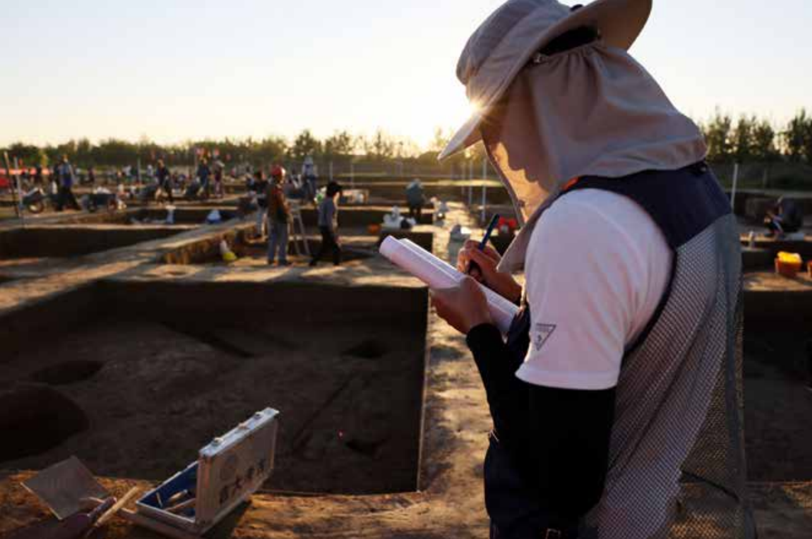

In 1921, Andersson’s discovery of the Yangshao site in Henan is often treated as the beginning of Chinese archaeology. Five years later, Li Ji’s excavation at Xiyin Village (Xia County, Shanxi) marked the start of Chinese-led archaeological work. Starting from Xia County in the Yuncheng Basin—where Shaanxi, Shanxi, and Henan meet—this piece follows a century of Yangshao research to show why southern Shanxi became a decisive crossroads: where the Xiyin tradition (Miaodigou) met Banpo influences, and where a forceful cultural trajectory rose and radiated outward.

This piece is built as a field-based archaeology narrative: starting from a loess cliff and scattered sherds, it moves through three linked “sites” (Xiyin, Zaoyuan, Shicun) to show how a century of research re-drew the map of Yangshao culture—and why southern Shanxi became a hinge zone for cultural interaction, migration, and evidence-making.
Excerpt 1: Setting off from Xiyin Village
Behind the Li Ji Memorial Hall in Xiyin Village, Xia County, stands a loess cliff about two meters high—easy to miss without archaeological training. The museum director, Huang Yongjiu, asked us to look closely: the gray patches embedded in the yellow earth were “ash pits,” ancient refuse deposits. In the cut face, shards with hard, sharp edges were faintly visible; in the grass at our feet, more fragments lay scattered—mostly red pottery, with some gray and black ware, and even a few pieces of painted pottery with black patterns on red surfaces. When Li Ji and Yuan Fuli passed through Xiyin on February 22, 1926, they wrote of a place “covered with prehistoric sherds”—this was it.
Li Ji, a Harvard-trained anthropologist and then a lecturer at Tsinghua’s Institute of Chinese Classics, had been advised by Bishop of the Freer Gallery in late 1925 to conduct fieldwork. Before excavating, Li wanted to survey southern Shanxi along the Fen River. He left Beijing on February 5, 1926 with the geologist Yuan Fuli. On arriving in Xia County on February 22, they first visited the legendary Yu the Great Temple and tombs said to belong to Yu’s descendants and famous ministers—yet these appeared to be merely larger ordinary mounds: “judging from appearances alone, I could not be certain they were genuine tombs.”
When they began picking up pottery fragments exposed on the surface, villagers gathered around. To avoid attracting too much attention, they did not stay long. Only on October 15—backed by Tsinghua University and the Freer Gallery—did they return to conduct a formal excavation.
Excerpt 2: The accidental discovery of Zaoyuan—and a new path through old debates
In a photo provided by archaeologist Xue Xinmin of the Shanxi Provincial Institute of Archaeology, he stands shoulder to shoulder with Tian Jianwen and Yang Linzhong. All three look young and self-assured. In 1991, these close friends jointly discovered the Zaoyuan site in Yicheng, opening a path toward resolving the relationship between Banpo and Miaodigou cultures. Before they were thirty, they had already made a name for themselves in Chinese Neolithic archaeology—and were affectionately nicknamed the “Three Swordsmen” by local colleagues.
The discovery was almost accidental. In early May 1991, to support construction of the Houma–Yueshan Railway, the Shanxi Provincial Institute decided to excavate the Beihan site in eastern Yicheng, with Xue leading the work. Staffing was limited. Tian, stationed at the Qucun–Tianma site, and Yang, working at the Southeast Shanxi archaeology station, were Xue’s close friends and of similar age. Tian had already surveyed nearby areas, so the three agreed to investigate a 20-kilometer radius centered on Beihan, searching for ancient cultural sites.
Since the Xiyin excavation, archaeology had proven not only that China had a Stone Age, but that it was remarkably developed. Prehistoric sites were concentrated in the Yuncheng and Linfen basins, and by the 1990s many late Paleolithic and mid-to-late Neolithic sites had been identified across Shanxi. Yet for a long time, no early remains dating roughly 10,000–7,000 years ago had been found here—unlike discoveries elsewhere such as Laoguantai in Shaanxi, Peiligang in Henan, and Cishan in Hebei. Shanxi archaeologists had long hoped to find earlier evidence than Yangshao.
Excerpt 3: Shicun—and the stone-carved silkworm pupae
After several days of rain and half a day of sun, the excavation site finally dried enough for us to enter. Shicun lies about 10 kilometers from Xiyin, roughly 15 kilometers southwest of Xia County. It is currently the Neolithic site found closest to the Yuncheng Salt Lake.
The reason for excavation was straightforward. Jilin University’s School of Archaeology had long hoped to run field-teaching in the Central Plains, and Xia County— rich in historical remains—became a key target. With support from the local government, Vice Dean Duan Tianjing and Associate Professor Fang Qi, accompanied by Director Huang Yongjiu, conducted a series of surveys and ultimately determined that Shicun’s cultural layers were relatively simple and suitable for student training. In 2019, they established what is now the country’s largest field archaeology practice base here.
In other words, the initial purpose was teaching. The Shicun site is estimated to have once covered 35,000 square meters, but over half has disappeared beneath roads and infrastructure, leaving just over 10,000 square meters. One area—separated by pillars—was excavated last year; nearby test trenches, just opened, were worked by frontline archaeologists from across the country attending a national training program. A faster-moving set of trenches, meanwhile, recorded the results of Jilin University third-year students’ month-long practicum in clearing habitation areas.